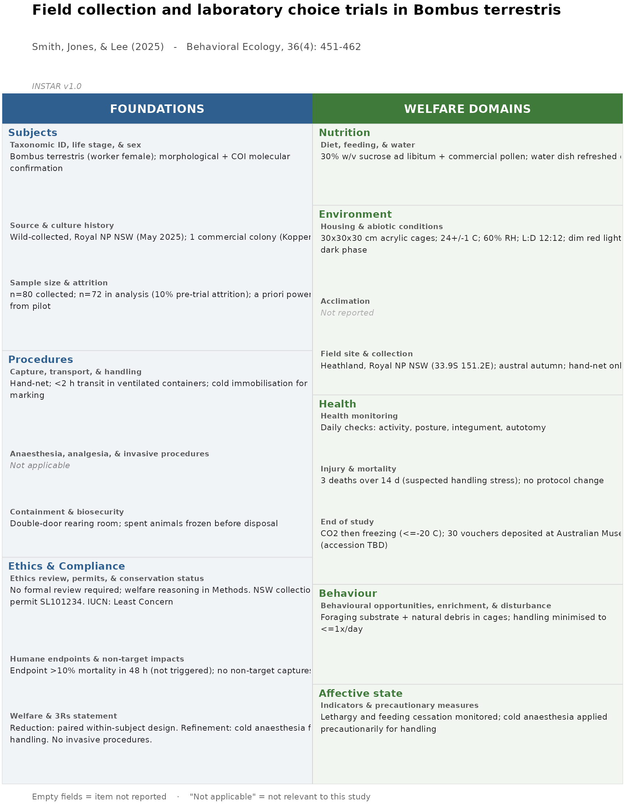

instarreport is the R implementation of
INSTAR (INvertebrate Standards for Treatment And
Reporting), an 18-item reporting framework for invertebrate welfare in
research. It produces a standardised, one-page summary figure for a
paper in the spirit of the PRISMA and ROSES flow diagrams. Each cell of
the figure carries the substantive content for the corresponding
framework item, not just a tick-box.
The INSTAR framework
The package ships with the 18-item INSTAR framework as the exported
data frame instar_items.
instar_items
#> order group domain item_id
#> 1 1 foundation Subjects subjects_taxon
#> 2 2 foundation Subjects subjects_source
#> 3 3 foundation Subjects subjects_n
#> 4 4 foundation Procedures proc_handling
#> 5 5 foundation Procedures proc_anaesthesia
#> 6 6 foundation Procedures proc_biosecurity
#> 7 7 foundation Ethics & Compliance ethics_review
#> 8 8 foundation Ethics & Compliance ethics_endpoints
#> 9 9 foundation Ethics & Compliance ethics_statement
#> 10 10 welfare Nutrition nutrition_diet
#> 11 11 welfare Environment env_housing
#> 12 12 welfare Environment env_acclimation
#> 13 13 welfare Environment env_field
#> 14 14 welfare Health health_monitoring
#> 15 15 welfare Health health_injury
#> 16 16 welfare Health fate_end
#> 17 17 welfare Behaviour behaviour_general
#> 18 18 welfare Affective state affect_indicators
#> item
#> 1 Taxonomic ID, life stage, & sex
#> 2 Source & culture history
#> 3 Sample size & attrition
#> 4 Capture, transport, & handling
#> 5 Anaesthesia, analgesia, & invasive procedures
#> 6 Containment & biosecurity
#> 7 Ethics review, permits, & conservation status
#> 8 Humane endpoints & non-target impacts
#> 9 Welfare & 3Rs statement
#> 10 Diet, feeding, & water
#> 11 Housing & abiotic conditions
#> 12 Acclimation
#> 13 Field site & collection
#> 14 Health monitoring
#> 15 Injury & mortality
#> 16 End of study
#> 17 Behavioural opportunities, enrichment, & disturbance
#> 18 Indicators & precautionary measures
#> description
#> 1 Species identification to the lowest practicable taxonomic level (with method); life stage(s) and sex where determinable or relevant; voucher specimens or reference imagery deposited where appropriate.
#> 2 Origin: wild-collected (with locality and date), laboratory colony (founding stock, source, date of establishment), or commercial supplier (named). For captive stock: generations in captivity, rearing conditions, and selection or inbreeding history.
#> 3 Total individuals collected or used and number contributing to analysis, with attrition accounted for. Justification of sample size (a priori power, pilot data, or stated convention). For bulk-sampling or mass-rearing work, report order-of-magnitude counts or ranges, and the unit of replication (colony, cycle, trap-day, batch), rather than individual totals.
#> 4 Capture method; transport duration, conditions, and mortality. Routine handling and restraint. Marking or tagging method, tag mass where relevant, retention checks. Where individual handling is not practicable (pitfall, Malaise, light, or sticky trapping and similar), report sampling effort (trap-days, trap-nights, deployment volume), trap design and check routine, and measures taken to reduce by-catch, retention time, and trapped-animal suffering.
#> 5 Anaesthetic or immobilisation agent or method; induction and recovery times; justification. Whether post-procedure analgesia was used, agent and dose, or explicit justification for omission. For surgical/invasive procedures: procedure, instruments, sterility, duration, recovery.
#> 6 Measures to prevent escape (particularly for non-native taxa) and procedures for disposal of waste and contaminated material.
#> 7 Institutional or regulatory ethics review and permit numbers, or an explicit statement that none was required. Collection or import permits. IUCN, national, or regional conservation status of focal taxa. Country, state, and any translocation between jurisdictions, including distance from point of collection where relevant.
#> 8 Predefined criteria for terminating procedures or experiments early in response to welfare concerns, and any instances triggered. For field work: anticipated and observed non-target impacts, with mitigation.
#> 9 Brief statement summarising welfare considerations and how the three Rs (Replacement, Reduction, Refinement) informed study design.
#> 10 Composition and source of diet or bait; preparation; feeding frequency and access; provision of water or moisture; any pre- or post-experimental fasting with justification.
#> 11 Enclosure materials, dimensions, substrate, and structural complexity. Stocking density and grouping. Temperature, humidity, ventilation, photoperiod and lighting, and water parameters for aquatic species. Enclosure cleaning frequency and protocol.
#> 12 Duration and conditions of any acclimation period before experimental procedures.
#> 13 Habitat type, location, abiotic conditions, and seasonality. Trap design, placement, deployment duration, checking frequency, and measures to limit injury, predation, exposure, or desiccation.
#> 14 Methods and criteria for assessing physical condition (responsiveness, posture, integument, autotomy). Any screening for disease or parasites and quarantine procedures. Frequency of welfare checks.
#> 15 Number and timing of injuries and unexpected deaths, suspected causes, and any interventions or protocol adjustments. For colony or industrial-scale work where individual death counts are not meaningful (because of scale, cannibalism, or routine attrition), report the disease-screening and prevention regime, density and condition monitoring, and any conditions under which cohort losses triggered intervention or protocol change.
#> 16 Method of killing (euthanasia, sacrifice, or slaughter as contextually appropriate) and justification; release protocols for field-collected animals; continued holding, rehoming, or transfer arrangements; voucher specimen deposition. For mass-rearing work, use the welfare-community terminology for the context (slaughter method for farmed insects). For studies considering release, note the reasoning behind the choice between release, continued holding, rehoming, and slaughter, including disease-spread risk to wild conspecifics and any maladaptation incurred during captivity.
#> 17 Aspects of the setup that supported or constrained species-typical behaviour. Provision of refugia or enrichment. Measures to reduce ambient disturbance. For social or gregarious species, access to conspecifics and the structure of social grouping. Opportunities for agency and choice (e.g., control over aspects of the physical or social environment).
#> 18 Taxon-appropriate behavioural and physiological indicators of stress, pain, or distress monitored, and how interpreted. Where capacity for affective experience is uncertain, the precautionary measures adopted.
#> lab field
#> 1 Y Y
#> 2 Y Y
#> 3 Y Y
#> 4 Y Y
#> 5 C C
#> 6 Y C
#> 7 Y Y
#> 8 Y Y
#> 9 Y Y
#> 10 Y C
#> 11 Y C
#> 12 Y C
#> 13 - Y
#> 14 Y C
#> 15 Y Y
#> 16 Y Y
#> 17 Y Y
#> 18 Y YItems are grouped into five welfare domains (Mellor et al. 2020, with “affective state” in place of “mental state”) and three cross-cutting foundations. End-of-study disposition lives within the Health welfare domain.
Filling out the items
Three workflows, all producing the same items data frame
that instar_report() consumes.
The INSTAR.csv sheet
The usual route, and the one the framework is designed around. Write
the blank sheet, fill in the report column, read it
back.
write_template("INSTAR.csv")
# ...fill the `report` column in Excel, Numbers, or any editor...
items <- read_items("INSTAR.csv")One row per reporting item, carrying its domain,
item, description and applicability flags,
with an empty report column at the far right to type into.
Reserved rows at the top hold a usage note, the framework version, and
the paper’s own details, so a completed file explains itself and
identifies both the study it belongs to and the framework it was
completed against. That also means instar_report() can take
it whole:
report <- instar_report(read_items("INSTAR.csv"))A copy ships with the package:
system.file("extdata", "INSTAR.csv", package = "instarreport")
#> [1] "/home/runner/work/_temp/Library/instarreport/extdata/INSTAR.csv"The same rows are available as a formatted spreadsheet
(INSTAR.xlsx) for anyone who would rather not look at a
CSV. Save it back out as CSV to read it into R.
Interactive prompt
The most forgiving workflow for first-time users.
instar_fill() walks through each item, showing its name and
description, and prompts for a value. It can save partway and resume
later.
items <- instar_fill(save_to = "INSTAR.csv")At any prompt, type the value, or one of [enter] to keep
current, NA for not applicable, skip to leave
blank, back to step back, save to write
progress, or quit to stop.
To resume:
items <- instar_fill(read_items("INSTAR.csv"),
save_to = "INSTAR.csv")To edit a single item afterwards, with no need to know
item_ids. Pass no item_id and you will be
shown a numbered menu.
items <- instar_edit(items)
items <- instar_edit(items, "subjects_n") # or by idProgrammatic
Useful in scripts and pipelines.
instar_set() takes
item_id = "what the study reports" pairs, as many as you
like at once.
items <- instar_set(
instar_template(),
subjects_taxon = "Bombus terrestris (worker female); morphology + COI",
subjects_n = "n = 80; 72 analysed",
env_field = NA, # does not apply
proc_anaesthesia = NA
)A string reports the item, NA marks it not applicable,
and "" leaves it unreported. The same three states as the
report column of the sheet.
Set value directly and it will not work, and will not
tell you so. status is the single source of truth, and
instar_report() blanks value for any item
whose status is not "reported", so a table filled in that
way renders as an entirely unreported study.
# Does nothing useful: status is still "not_reported", so the text is
# dropped when the report is built.
items$value[items$item_id == "subjects_taxon"] <- "Bombus terrestris"Checking progress
# A part-filled example to look at.
items <- read_items(
system.file("extdata", "example_items.csv", package = "instarreport")
)
print(items)
#>
#> Subjects
#> * Taxonomic ID, life stage, & sex
#> Bombus terrestris (worker female); morphological + COI
#> molecular confirmation
#> * Source & culture history
#> Wild-collected, Royal NP NSW (May 2025); 1 commercial colony
#> (Koppert, F2)
#> * Sample size & attrition
#> n=80 collected; n=72 in analysis (10% pre-trial attrition);
#> a priori power from pilot
#>
#> Procedures
#> * Capture, transport, & handling
#> Hand-net; <2 h transit in ventilated containers; cold
#> immobilisation for marking
#> - Anaesthesia, analgesia, & invasive procedures
#> * Containment & biosecurity
#> Double-door rearing room; spent animals frozen before
#> disposal
#>
#> Ethics & Compliance
#> * Ethics review, permits, & conservation status
#> No formal review required; welfare reasoning in Methods. NSW
#> collection permit SL101234. IUCN: Least Concern
#> * Humane endpoints & non-target impacts
#> Endpoint >10% mortality in 48 h (not triggered); no
#> non-target captures
#> * Welfare & 3Rs statement
#> Reduction: paired within-subject design. Refinement: cold
#> anaesthesia for handling. No invasive procedures.
#>
#> Nutrition
#> * Diet, feeding, & water
#> 30% w/v sucrose ad libitum + commercial pollen; water dish
#> refreshed daily
#>
#> Environment
#> * Housing & abiotic conditions
#> 30x30x30 cm acrylic cages; 24+/-1 C; 60% RH; L:D 12:12; dim
#> red light in dark phase
#> o Acclimation
#> * Field site & collection
#> Heathland, Royal NP NSW (33.9S 151.2E); austral autumn;
#> hand-net only
#>
#> Health
#> * Health monitoring
#> Daily checks: activity, posture, integument, autotomy
#> * Injury & mortality
#> 3 deaths over 14 d (suspected handling stress); no protocol
#> change
#> * End of study
#> CO2 then freezing (<=-20 C); 30 vouchers deposited at
#> Australian Museum (accession TBD)
#>
#> Behaviour
#> * Behavioural opportunities, enrichment, & disturbance
#> Foraging substrate + natural debris in cages; handling
#> minimised to <=1x/day
#>
#> Affective state
#> * Indicators & precautionary measures
#> Lethargy and feeding cessation monitored; cold anaesthesia
#> applied precautionarily for handlingprints all 18 items grouped by domain, marking each as reported
(*), not applicable (-), or blank
(o), with the current value shown underneath.
Every item carries a status, which is the single source
of truth.
status |
Meaning | Renders as |
|---|---|---|
"reported" |
The study reports this item | The text in value
|
"not_reported" |
The study is silent on it | Not reported, muted |
"not_applicable" |
It does not apply to this study | Not applicable, grey |
value carries substantive content only, and is
NA whenever status is not
"reported", so the two can never disagree. Reading a CSV
with no status column derives it from value.
Blanks become "not_reported", and "NA" or
"N/A" are honoured as shorthand for
"not_applicable".
Build the report
instar_report() returns data, not a plot. It
carries the paper metadata, the resolved item table, and a coverage
summary. Rendering is a separate step, so you can compute on a report
before (or without) drawing it.
report <- instar_report(
items,
paper = list(
title = "Field collection and laboratory choice trials in Bombus terrestris",
authors = "Smith, Jones, & Lee (2025)",
journal = "Behavioral Ecology, 36(4): 451-462"
)
)
report
#> <instar_report>
#> Field collection and laboratory choice trials in Bombus terrestris
#> 16 of 17 applicable items reported (94%); 1 not applicable.
#> plot() to draw it; save_figure() for a PDF/PNG; write_report() for a depositable CSV.summary() gives one row per framework item, with its
domain, group, and status. This is the handle to use for anything
programmatic.
head(summary(report))
#> item_id item domain
#> 1 subjects_taxon Taxonomic ID, life stage, & sex Subjects
#> 2 subjects_source Source & culture history Subjects
#> 3 subjects_n Sample size & attrition Subjects
#> 4 proc_handling Capture, transport, & handling Procedures
#> 5 proc_anaesthesia Anaesthesia, analgesia, & invasive procedures Procedures
#> 6 proc_biosecurity Containment & biosecurity Procedures
#> group status
#> 1 foundation reported
#> 2 foundation reported
#> 3 foundation reported
#> 4 foundation reported
#> 5 foundation not_applicable
#> 6 foundation reported
# Which items did this study not report?
subset(summary(report), status == "not_reported", select = c(domain, item))
#> domain item
#> 12 Environment AcclimationRender the figure
plot() draws the standardised figure.
plot(report)
If you want to modify the figure before rendering,
autoplot() returns the underlying patchwork composition
instead of drawing it.
autoplot(report) + patchwork::plot_annotation(caption = "Figure S1")Save it
A finished report has two deposit artifacts, the completed sheet and
the figure. The naming convention is that write_ produces
text and save_ produces figures.
write_report(report, "INSTAR.csv") # the completed sheet
save_figure(report, "INSTAR.pdf") # the figure
save_figure(report, "INSTAR.png", dpi = 300)write_report() writes the same file shape an author
would have filled in by hand, with the paper’s details in the reserved
rows, so it reads straight back through read_items(). This
is the machine-readable artifact worth depositing. The figure is for
human readers.
save_figure() renders the report and writes it via
ggplot2::ggsave(), choosing a compact page height from the
figure’s natural content size (white background, 300 dpi for raster
formats). Pass an explicit height to override.
Many studies at once
Everything above describes one study. Once sheets are being deposited
alongside papers, a set of them is a corpus, and the same machinery
summarises a literature rather than a study. This is a sketch. See
vignette("auditing") for the full treatment.
read_instar() is the loader. Point it at a file, a
directory, or a vector of either. It works out the format from the
extension and always returns an instar_corpus, whether it
found one sheet or two hundred.
corpus <- read_instar("supplements/")
corpus
#> <instar_corpus>
#> 45 sheets, INSTAR v1.0
#> median coverage 71% (range 22-100%)
#> 2 files failed to read; see attr(., "failed")A file it cannot read is reported and skipped rather than aborting
the run, with the error kept in attr(corpus, "failed"). In
a corpus of any size some fraction of files will be malformed, and the
useful behaviour is to get the other 199 and a list of what to go and
fix.
Sheets are named by DOI where the reserved rows carry one, and by
file name otherwise. A corpus is a plain named list underneath, so
lapply(), Filter() and [ all work
on it as you would expect, and summary() gives one row per
sheet.
instar_audit() computes coverage per framework item
across the corpus:
audit <- instar_audit(corpus) # or instar_audit("supplements/")
summary(audit) # one row per item
summary(audit, by = "journal") # ...per item per journal
plot(audit)Not-applicable items stay out of the denominator, per study and per item, so an item that genuinely does not apply is never counted against a study.
If a corpus is filed into folders that mean something, read it recursively and the folder survives as a grouping variable:
corpus <- read_instar("corpus/", recursive = TRUE)
summary(instar_audit(corpus), by = "folder")Studies that never filled in a sheet
Which is every study published before the framework existed. Score
them into a wide table instead, one row per paper and one column per
item_id:
scores <- data.frame(
doi = c("10.1234/a", "10.1234/b", "10.1234/c"),
journal = c("J Alpha", "J Beta", "J Beta"),
subjects_taxon = c("Y", "Y", "Y"),
subjects_n = c("Y", "N", "N"),
env_field = c("NA", "Y", "-"),
stringsAsFactors = FALSE
)
audit <- audit_from_matrix(scores, id = "doi")
summary(audit)
#> item_id item domain group
#> 1 subjects_taxon Taxonomic ID, life stage, & sex Subjects foundation
#> 2 subjects_n Sample size & attrition Subjects foundation
#> 3 env_field Field site & collection Environment welfare
#> n_studies reported not_reported not_applicable applicable percent_reported
#> 1 3 3 0 0 3 100.00000
#> 2 3 1 2 0 3 33.33333
#> 3 3 1 0 2 1 100.00000Columns matching an item_id are treated as items. Every
other column is carried through as study metadata, so
journal here is immediately available to
summary(by = ) without building a lookup table. Cell values
are read leniently, because scoring sheets are made by people:
Y, yes, TRUE, 1 and
C all mean reported, N, no,
FALSE and 0 mean not reported, and
NA, N/A, - and blanks mean not
applicable.
Framework items absent from the matrix are left out of the audit rather than counted as unreported, since the scoring never checked them.
Web tool
For a clickable interface, run:
The Shiny app lets you fill in each framework item interactively with
a live preview, or upload a filled INSTAR.csv to render it.
It downloads the figure (PDF or PNG) and the completed
INSTAR.csv. A hosted copy is at https://instar-statement.org/app/, needing no
installation.